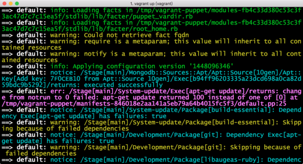
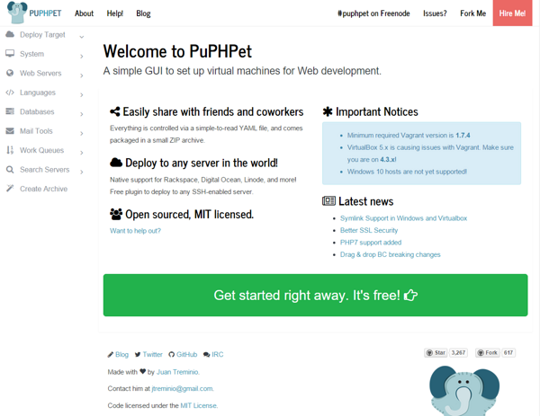
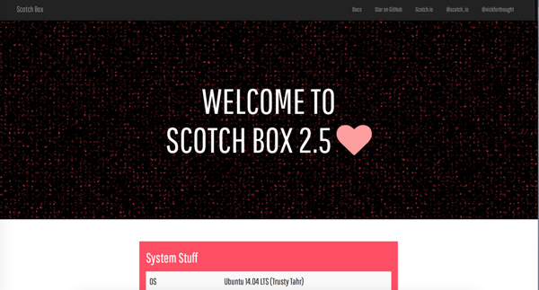

Vagrant打造跨平台零配置Web开发环境问题和解决方案汇总

文章目录
我使用的Vagrant配置镜像： https://github.com/scotch-io/scotch-box
对应的box文件链接： https://drive.scotch.io/scotchbox/2.5.0/scotch.box
vagrant本地加载box：vagrant box add ... ...
vituralbox 4.3.12版本链接： http://download.virtualbox.org/virtualbox/4.3.12/VirtualBox-4.3.12-93733-Win.exe
win10 hostonly问题补丁链接： https://www.virtualbox.org/attachment/ticket/14040/VBox-Win10-fix-14040.exe
安装缘起
实验室有一台win10主机，自用MBP，平时本来不怎么做web开发的（我的研究方向和这个关系不大），但上课科目中有一门要用到web开发，为了尽可能不对当前的桌面环境配置产生影响，同时能够正常完成老师布置的作业，于是尝试使用vagrant。
还有一点，我想在Win、OSX平台下获得一致的开发体验，不需要我在每个平台都重新配置一遍，这个刚好vagrant也可以满足。
Windows 10下安装Vagrant
Vagrant需要本机上装有Virtualbox和Git，不过Vagrant安装包里边自带了这两个软件，我本以为这样直接就可以了，没想到，这里有一个坑。
Virtualbox兼容性问题
Virtualbox for win存在版本兼容性问题，试了很多次虚拟机都启动不起来，各种出错，谷歌之，说版本降级可解决，经过一番比较，Virtualbox 4.3.12版无兼容性问题，下载链接见文首。
hostonly问题
配置Vagrant的时候，为了让虚拟机能够和宿主机通信，一般采用的是hostonly的网络设置，但是这样配置之后，虚拟机启动失败，错误提示：
|
|
谷歌之，在官方论坛上找到了对应问题的ticket，这个问题可能依旧是Win10不兼容导致的，不过幸运的是有补丁，打上补丁就搞定了，链接在这里： https://www.virtualbox.org/attachment/ticket/14040/VBox-Win10-fix-14040.exe 下次在开启虚拟机之前，首先以管理员模式打开这个补丁就行了。
OSX 10.11下安装Vagrant
OSX 10.11下安装Vagrant一切正常，并未发生问题。
Vagrant的box镜像选择
要求
毕竟web开发，box镜像中，PHP、Node、Mysql等等必备的东西一个都不能少，最好是都配置完好的，能够直接使用
方案一✗基于puppet脚本的Vagrant配置镜像
使用puppet，就可以让系统自己安装预先设定好的软件，想来也是不错的，在Github上搜寻到了一个star比较多的项目
按照上边的步骤操作，出现的错误，我谷歌之亦未寻得答案，只好作罢。

看到错误提示，应该是puppet脚本出现问题了，返回了错误的值，又想到我的Ubuntu双系统中apt-get update语句执行之后便是漫长地等待，觉得使用puppet安装这些软件可能不是一个适合我的选择
方案二✗PuPHPet

这其实也是一个基于puppet的一个vagrant配置镜像，原理和方案一差不多，不同之处在于方案二拥有一个GUI界面来配置每一个细节，给了用户更多的定制性，当然，对于刚刚接触web开发的同学或者仅仅需要最基本功能的同学来说，这倒成了一种负担。
方案三✔︎基于已配置好的打包box的Vagrant配置镜像
Github上另外一个项目引起了我的注意：
根据首页上的介绍，不需要联网配置，不使用puppet这类运维工具配置，即装即用，几乎完全满足了我的需求。
按照步骤配置下来，终于在折腾了一下午之后成功启动虚拟机

剩下的按照首页上的介绍直接使用就好了，这里不再多述。
Vagrant镜像安装技巧：box镜像文件快速下载
box镜像文件动辄五六百MB，如果用Vagrant默认的下载方式，真的不知道下到啥时候，这里介绍一个『快一点』的下载方式：
-
首先按照正常步骤，输入
vagrant up之后会有一句指示当前下载box文件的url，例如1 2 3==> default: Adding box 'hashicorp/precise32' (v1.0.0) for provider: virtualbox default: Downloading: https://atlas.hashicorp.com/hashicorp/boxes/precise32/versions/1.0.0/providers/virtualbox.box -
此时我们
ctrl+c强制停止当前进程，将url拷贝到迅雷或者别的下载工具中进行下载，下载完成后进入下载目录，打开命令行，输入（其中hashicorp/precise32为配置文件为box镜像起的名字）1vagrant box add hashicorp/precise32 -
Vagrant会自动对box镜像进行处理，此时我们再回到之前的Vagrant配置目录中，
vagrant up启动，过不了一会儿就安装好了。
额外配置：修改默认的public同步文件夹至其他文件夹
打开Vagrantfile，找到
|
|
修改"."为自己的目录，然后vagrant up开启虚拟机，进入ect/apache2目录，配置vituralhost的directory，从public改为自定目录即可
总结
- puppet一件利器，但是还是需要看使用场景，至少在我这个场景下我觉得直接全部打包更方便快捷。
- 在国内的网络环境，能够离线安装就离线安装，在线的方式费时费力还不一定成功
- 下次有时间再试试Docker，看看有没有这么多坑。
文章作者 fangd123
上次更新 2015-11-28